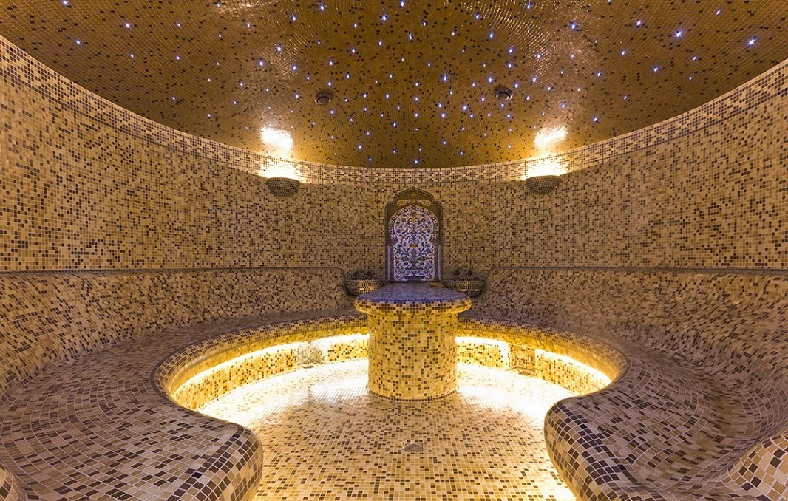

Туреччина та її краєвиди

Населення і культура Туреччини

Опинившись у Туреччині вперше, переживаєш культурний шок. Країна майстерно поєднує в собі як колорит Близького Сходу, так і європейську сучасність. У великих містах-мегаполісах життя нічим не відрізняється від звичного нам, а в маленьких містечках, поринаєш в Східну казку.
Однак, не варто забувати про певні релігійні, мовні та культурні особливості, що притаманні цій країні. Основне населення країни - турки. У країні ніколи не проводився національний перепис населення. На південному сході Туреччини компактно проживає понад півмільйона арабів. У великих містах, особливо в Стамбулі, багато ассирійців
Євреї Туреччини, які складають близько 0,1% населення Туреччини і проживають у великих містах, вважають себе турками, які сповідують іудаїзм. Греки, албанці, грузини, азербайджанці і представники багатьох інших народів проживають по всій країні, в основному в Стамбулі, Ізмірі, Анкарі та інших великих містах. За віросповіданням турки є мусульманами.
Ось декілька цікавих фактів про культуру та населення Туреччини:
- Мішаний спадок:
- Мовна різноманітність:
- Кухня:
- Кава та чай:
- Культурні пам'ятки:
- Стамбул
- Танці і музика:
- Гостиність:
Туреччина розташована на перетині Азії та Європи, і її культура відображає впливи як сходу, так і заходу. Цей географічний положення робить її унікальною з точки зору культурного спадку.
Офіційною мовою є турецька, але в країні існує багато інших мовних груп, включаючи курдську, арабську та грецьку. Культурна різноманітність також відображається в різних мовах та діалектах.
Турецька кухня відома своєю смачною та різноманітною їжею. Ізюминкою є такі страви, як долма (фаршировані листя винограду або капусти), кебаби та баклава. Туреччина вважається однією з гастрономічних столиц світу.
Кава і чай в Туреччині мають важливе значення у їхньому культурному житті. Турецька кава славиться своєю сильною ароматною кавою, а чай популярний як національний напій.
Туреччина багата на історичні та культурні пам'ятки, такі як Гагія Софія в Стамбулі, печерні церкви Каппадокії, давні міста Ефес та Троя, і багато інших. Вони відображають багатий спадок країни.
Стамбул, найбільше місто Туреччини, лежить на двох континентах і є єдиним мегаполісом у світі, розташованим на окремому материку (Азія та Європа).
Туреччина має розмаїтий асортимент танців і музичних жанрів. Відомий турецький танець "беледі" та традиційна музика, така як баглама і зурна, є популярними серед населення.
Турецька культура відома своєю гостиністю. Гостей завжди вітають тепло і щедро подають їм їжу та напої.
Ці факти демонструють цікаві аспекти культури та населення Туреччини

Гордість турецької культури - хаммам
Турецьку лазню намагаються повторити в багатьох країнах, але тільки в Туреччині вона здатна принести неземне розслаблення та насолоду. Хаммам - це не лише особиста гігієна та відпочинок, але також дієвий спосіб заповнення заряду бадьорості та енергії, чудовий метод для впорядкування думок.
Функціонал лазні ґрунтується на роботі спеціальних ніш, у яких підтримується температура в межах 70–100 градусів. Найжаркіші умови у центровій ніші. Лежаки гарячі, тому відпочиваючий отримує можливість добре пропотіти
На думку вчених, розумний відпочинок у лазні можна порівняти з терапевтичним сеансом. Парна стимулює білковий обмін, ефективно бореться із застійними процесами кровообігу та розслаблює нервову систему, навіть якщо вона довго перебувала у напрузі.
Популярністю користується послуга підтримки у приміщенні морського клімату. Для цього використовують апарат Сольдоз, що розпорошує слабкий сольовий розчин. Тим, хто добре переносить спеку, підійде послуга гарячий душ - ідеальний для прискорення кровообігу і повного релаксу.
А про національні свята Туреччини читай тут!Відмінності хаммама від звичайної лазні:
Відмінності хаммама від звичайної лазні:
- середня температура нагріву повітря 55 градусів;
- максимально висока вологість, завдяки чому пара стає видимою і легше переноситься;
- хаммам надає нескінченні можливості - тут можна облаштувати спа, масажний кабінет, запропонувати відвідувачам пілінг та обгортання;
- як оздоблення стін використовуються керамічна плитка, натуральний мармур, на яких зручно лежати;
- Хамм повинен бути шикарним, при його облаштуванні не прийнято економити.
Сімейні традиції
Традиційно у сім'ї господар — чоловік. Роль жінки - створювати затишок у будинку та підкорятися чоловікові. Те саме стосується дочок. Носити їм закритий одяг чи ні, залежить від рішення чоловіка. Позашлюбні зв'язки дівчатам заборонені релігією.
У Туреччині шанують старших та літніх людей. Коли у приміщенні знаходиться старша людина, не дозволяючи курити, пішло жартувати. Якщо батьки вважають дівчину невідповідною парою для сина, швидше за все він відмовиться від одруження.
Будь-яка весільна церемонія починається зі сватання, потім слідує заручення. Родичі отримують за дочку значний викуп — за нього можна купити машину або квартиру. Якщо фінансовий достаток мінімальний, батьки домовляються між собою одружити дорослих дітей.
Після народження дитини близькі та друзі дарують мамі монети із золота, символічні фігурки та прикраси з коштовним камінням. До вибору імені для дитини ставляться відповідально. Щоб ім'я прижилося, вперше кілька разів вимовляють вголос дитині на вушко та моляться.
Коли немовля виповнюється 40 днів, його купають, натирають сіллю, збираються близьким сімейним колом і знову читають молитви. У віці 7-12 років кожен хлопчик проходить обряд обрізання.
А про природні умови та ресурси Туреччини читай тут!